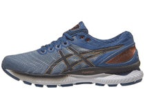
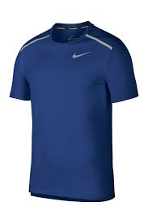
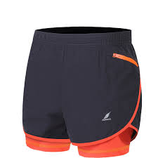
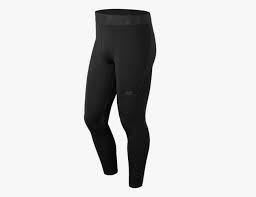
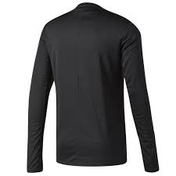
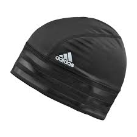
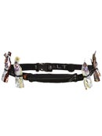
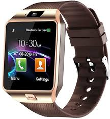

The importance of right equipment
The beauty of running is in its simplicity. All you really need is a good pair of shoes. Go to a
specialty running store where trained professionals will evaluate your feet, watch you run, recommend
the right shoes, and then let you go out for a test drive. You'll leave with a comfortable pair of shoes
that will have you running pain and injury free.
If you're just a gear junkie, we have listed other items many runners prefer for the time of year and
even your first race. We recommend starting out small again, best not to sink in a lot of money if
running just isn't for you after all. Just remember to do your research on products, we wouldn't want
the gear to hinder you results.
Shoes

A good pair of running shoes is a must. Running shoes not only provide substantial midsole foot
cushioning, they also offer arch support, aid in the prevention of inujuries and can promote
improved athletic performance.
Running Tee

Perhaps the two most importan qualities of a good running shirt are wicking ability and drying time.
Wicking is the process of transfering moisture or sweat away from your body through tiny spaces
within
the weave of the fabric and then dispersing it to the outer layer to evaporate.
Running Shorts

It may seem silly, but they do make shorts just for running. There are many different styles of
running
shorts available. These shorts offer an excellent range of motion and prevent chafing. Once you
start
researching what type will best meet your need, you'll find they come in various lengths. Each
length
will serve a purpose and should pick one based on your goals
Running Tights

To maintain peak performance during the winter months rely on working with the body's response to
temperature. Research has shown cold muscles perform worse and fatigue quicker. We recommend
dressing in layers, as your temperature will rise quickly. A great pair of running tights can make
all the difference.
Long Sleeve Compression

The same principals apply to long tee running shirts and with pants. Dress in layers that are easy to
remove and lightweight. You will heat up quick but it is important to start out a little warm so
your muscles don't fatigue or perform badly. We recommend material that will wick away moisture.
Beanie

A good beanie can keep your head nice and warm, and that, in turn will keep the rest of your body
warm and comfortable during each of your runs. In order to ensure that heat is retained, cold
weather gear needs to incorporate high-performing thermal capabilitites.
Racing Belt

These are a must have on race day. Gives you the ability to carry small water bottles and snacks
along your race path. While the course will have aid stations set up along the way, the selection is
not always the best. This way you can eat or drink something when you need that extra boost. Many
options available, pick the one that won't be cumbersome or to small it doesn't fit anything.
Smart Watch

Another must have item to make your race day even better. While many options of smart watches are out
there they all do the same thing, record that time. Great way to take a quick glance and make sure
you are on the pace time you want.
Shoes
Shoes are so important that we put them on here twice. Remember, you want to race in the same pair
you have been training with. While it might be tempting to get a fresh pair, DON'T. Running shoes
have a break in period. If you do want to get a new pair we recommend running with them before your
race day and break them in properly